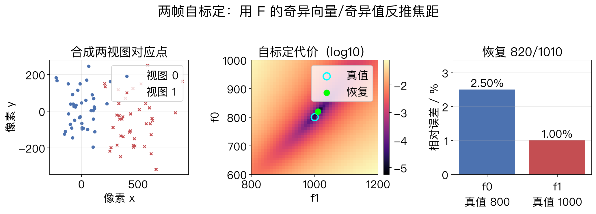
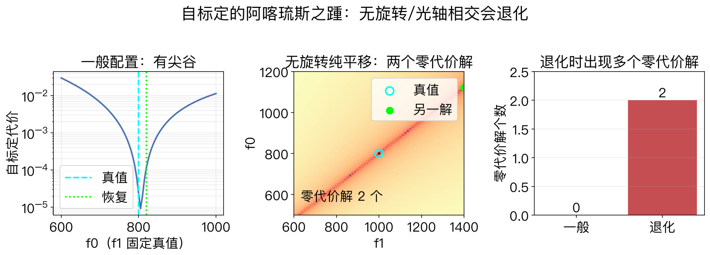
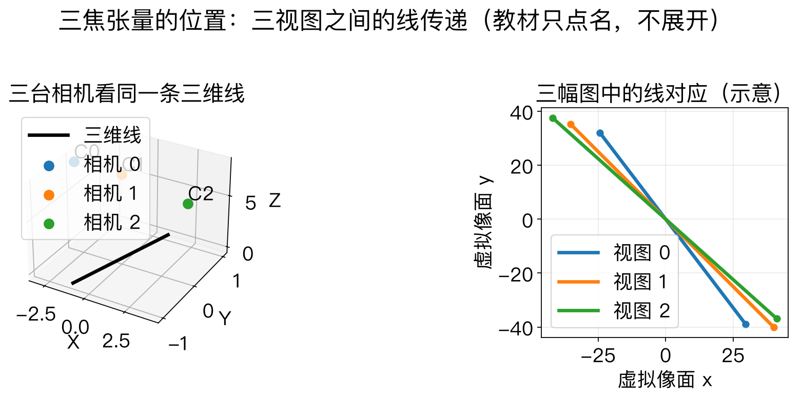

第11章 · 两帧 SfM 收尾
自标定与三焦：最后两块拼图
这一集补两件事：自标定、三焦张量。
自标定：把投影重建变成可测量的度量重建。
三焦张量：教材跳过，只讲它在三视图里做什么。
依据：原书 pp.684、712
本集路线
① 自标定：恢复相机内参 K
② 三焦：三视图的线传递
正课第一百三十五集
01 / 12
原书第 712 页 · 为什么自标定
度量重建：让重建有真实尺度
投影重建：平行线可能不平行，直角可能不直角。
度量重建：尺度、角度、平行关系都恢复。
做法：恢复每幅图的 K，把投影重建升级为度量重建。
只靠对应点不够，还需要平行线、消失点等信息。
依据：原书 p.712
P = K [R | t]
K 是相机内参。恢复 K，才能从投影重建走到度量重建。
正课第一百三十五集
02 / 12
原书第 713 页 · 模型假设
自标定的三条假设
零倾斜：相机没有绕光轴旋转。
方形像素：纵横比已知，通常取 1。
主点居中：像主点在图像中心。
假设越强，解越稳，但适用范围越窄；偏心裁剪会先破坏主点假设。
依据：原书 p.713
三条假设
零倾斜
方形像素
主点居中
正课第一百三十五集
03 / 12
原书第 713–714 页 · 两帧代数
Kruppa 方程：从 F 求焦距
输入：基础矩阵 F。
用 F 的奇异向量和奇异值构造三组方程。
每组方程对 f² 是仿射的，交叉相乘得到二次方程。
输出：两幅图的焦距 f0、f1。
依据：原书 pp.713–714
输入与输出
输入：F（3×3）
输出：f0、f1
不解三维点，只解焦距
正课第一百三十五集
04 / 12
原书第 714 页 · 何时失效
退化：两帧只是初值
无旋转、光轴相交等配置会退化。
退化时出现浮雕歧义，两组焦距都可能零代价。
工程上常用三帧以上，或用 EXIF/默认焦距做初值。
两帧结果适合做束调整的初值，不是最终答案。
依据：原书 p.714
工程做法
条件好：两帧初始化
条件差：多拍几帧
最终：束调整精修
正课第一百三十五集
05 / 12
图1 · 合成两帧实验
代价面的谷底就是焦距
40 个合成三维点，两帧相机。
真值 f0=800，f1=1000，加 0.3 像素噪声。
8 点法估 F；网格搜索得到 f0≈820、f1≈1010。
代价面有尖谷；谷底很平，说明数据信息不足。
依据：程序生成实验，未用教材原图

两帧自标定：合成对应点、代价面、f0/f1 误差｜程序生成，未用教材原图
正课第一百三十五集
06 / 12
图2 · 退化实验
纯平移：两个零代价解
把相机改成无旋转、纯平移。
代价面出现两个零代价解：800/1000 与 1120/1400。
两组焦距都让本质矩阵奇异值相等。
这是数据信息不足，不是算法没算好。
依据：程序生成实验，未用教材原图

自标定退化：一般配置 vs 无旋转纯平移的两个零代价解｜程序生成，未用教材原图
正课第一百三十五集
07 / 12
原书第 684/732–733 页 · 边界
三焦张量：三视图的线传递
基础矩阵 F：管两视图的点—线约束。
三焦张量 T：管三视图的线—线传递。
一条线在三幅图可见时，可以从一对图转到另一对图。
教材不展开 27 个参数；本集只讲位置和用途。
依据：原书 pp.684、732–733
两视图 vs 三视图
F：两视图，3×3
T：三视图，3×3×3
T 约束的是线，不是单点
正课第一百三十五集
08 / 12
图3 · 三焦示意
一条线，三幅图
三台合成相机看同一条三维线。
三条投影线都有限，深度都为正。
这只是几何示意，不是从图像估张量。
真要估 T，需要三视图的线对应和更复杂的代数。
依据：程序生成实验，未用教材原图

三视图线传递示意：三台合成相机看同一条三维线｜程序生成，未用教材原图
正课第一百三十五集
09 / 12
原书第 713–714 页 · 工程取舍
绝对度量还是可视化？
只做可视化或 IBR：三条假设通常够用。
要绝对精度：先预标定，再用地面控制点。
两帧自标定可以给束调整一个初值。
先粗对齐，再精修。
依据：原书 pp.713–714
按用途选假设
可视化 → 假设够用
绝对精度 → 预标定
两帧 → 只做初值
正课第一百三十五集
10 / 12
本集边界 · 三焦不展开
边界：合成管线与教材范围
实验全是合成数据，内参假设已知。
F 用 8 点法；自标定用奇异值相等的代价。
三焦只做线投影示意，没有估计 27 个参数。
目标是知道它是什么、什么时候用、为什么难。
依据：原书 p.684
能做到哪一步
自标定：能跑，有假设/退化
三焦：只示意，不实现
完整实现：回教材与文献
正课第一百三十五集
11 / 12
第11章 · 补遗收束
收束：能做稳，知道边界
自标定：Kruppa 从 F 估焦距；假设是零倾斜、方形像素、主点居中。
退化时加帧数或预标定。
三焦张量：三视图线传递；教材只点名，不展开。
作业：跑两帧 8 点法看代价面；改纯平移，看零代价解。
依据：本集回顾；原书 pp.712–714、732–733
带走三句话
自标定 = 从 F 估焦距
退化 = 加帧或预标定
三焦 = 三视图线传递
正课第一百三十五集
12 / 12